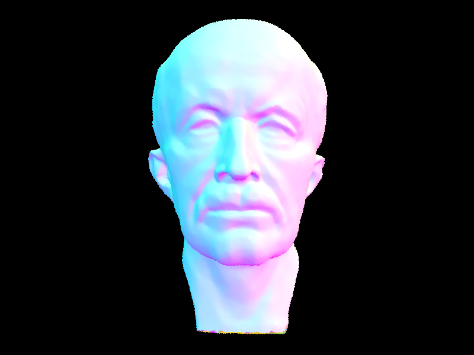
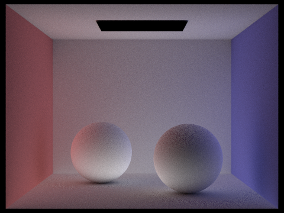

Overview
In part 1, we implemented ray generation and primitive intersection part of the rendering pipeline. Ray generation traces a ray from the view point to a pixel in the senor, hence we can use that ray to get the color for that pixel.
Primitive intersection is the foundation of the ray tracing. We implemented triangle and sphere intersection, which take a ray and test if it intersects with a given triangle/sphere in the space within the ray's maximum range.
In part 2, we implemented BVH (Bounding Volumne Hierarchy). BVH is a algorithm that preprocess the scene, and separates the primitives in the scene into different bounding box. By separating them into differnt bounding box,
we can determine if a ray intersects with a group of primitive instead of checking them one by one. This increases our rendering performance significantly.
In part 3, we implemented the Direct Illumination. We take care of both zero-bounce illumination and one-bounce illumination. Zero-bounce illumination only samples the objects emit itself. One-bounce illumination samples all light that
goes direct into a specific point in the scene. With both of them, we can see a scene with every object direct illuminated from the emission.
In part 4, we implemented the Global Illumination. Instead of using zero-bounce and one-bounce. We trace the light after hitting a object before it hits the maximum depth we want to trace.
This helps the render builds a better quailty and more realistic picture. Since the light can be reflected by the objects in the scene.
In part 5, we implemented Adaptive Sampling. Adaptive Sampling allows us to sample something that is clear enough compared to a Tolerance. This helps with the performance since we don't have to trace a "noise-free" pixel over and over again.
Part 1: Ray Generation and Scene Intersection (20 Points)
Walk through the ray generation and primitive intersection parts of the rendering pipeline.
- Ray generation: we first interpolate the given (x,y) in the camera space, where the resulting coordinate is (x', y', -1), and the camera space ray direction is (x', y', -1). We then transform this direction into world space by applying the c2w matrix and get resulting direction dir. The resulting ray would have the origin pos and the direction dir.
- Primitive intersection: Basically, we trace through the ray and see if at any time t that the position of the ray is equal to any point of the primitive. If t is a valid time (greater than min_t and less than max_t), then we can confirm that the ray intersects with the primitive. We also set the max_t to t every time we have an intersection, this prevents us from rendering something that is invisible from the camera's view of point (behind something we have seen). In the case of testing the intersection of the ray and sphere, we also want to make sure to take the smaller t for the same reason. Since the ray is likely to get an intersection with the sphere twice if there is an intersection.
Explain the triangle intersection algorithm you implemented in your own words.
- In Triangle::has_intersection, we used the Moller Trumbore Algorithm, which gives us t and the three terms in barycentric coordinate. To apply this algorithm, we first found two edges of the triangle (E1, E2) by subtracting the vertices, a vector S that points from a vertex of the triangle to the ray's origin, and vector S1, S2 that are D x E2 and S x E1, respectively. We then plugged in the vectors to the formula to get t, alpha, beta, and gamma. For the ray to intersect the triangle, it has to be that t is between r.min_t and r.max_t, and alpha, beta, and gamma are all between 0 and 1.
- In Triangle::intersect, we called Tiangle::has_intersection as a helper method. If there is an intersection, we populated isect with the corresponding values. To find the surface normal vector, we again found the barycentric coordinate of the intersection point inside the triangle, and calculated the surface normal as a weighted sum of the three vertex normals.
Show images with normal shading for a few small .dae files.

|

|

|
|
Part 2: Bounding Volume Hierarchy (20 Points)
Walk through your BVH construction algorithm. Explain the heuristic you chose for picking the splitting point.
- We used a recursive solution to construct BVH node. First, we checked if the current node is a leaf node by counting the number of elements from start to end, and classify the node as a leaf node if the count is less than or equal to max_leaf_size. If it is a leaf node, we create a new BVHNode object and assign start and end as the passed in arguments, and we return the new node directly. Otherwise, we would choose a splitting edge and split the primitives into two halves. We first sort them based on their centroids' x, y, or z coordinates, and then recursively call construct_bvh() on the left and right halves. Finally we assign the returned nodes to be the left and right of the current BVHNode.
- Heuristic for splitting: we splitted on the the midpoint of either the x, y, or z axis. To choose which axis to split on, for each of x, y, and z, we counted the number of primitives whose centroid lies to the "left" of the midpoint's x, y, or z. We picked the axis that divides most evenly (so that the left_count is the closest to half of the total number of primitives). If it happened so that there are zero primitives on one side of the split, we would assign the first half of the sorted primitives to the left tree and the second half to the right tree.
Show images with normal shading for a few large .dae files that you can only render with BVH acceleration.
|
|
|
|

|
|
Compare rendering times on a few scenes with moderately complex geometries with and without BVH acceleration. Present your results in a one-paragraph analysis.
Before:
CB Dragon 480x360 90.95s 32907 intersection tests per ray
Beast.dae 480x360 46.55s 17572 intersection tests per ray
After:
CB Dragon 480x360 0.09s 17 intersection tests per ray
Beast.dae 480x360 0.16s 27 intersection tests per ray
Overall, the BVH results in great performance gain by avoiding most of intersection tests.
Part 3: Direct Illumination (20 Points)
Walk through both implementations of the direct lighting function.
-
Hemisphere: Repeat the following steps num_samples times: sample a random w_j direction from hemisphereSampler, where w_j
lives in object space. Calculate the bsdf at the hit point by calling f on the object space vectors w_out and w_j. Trace
a ray that starts from the hit point and goes in the direction of world space w_j. Set the ray's min_t to EPS_F to avoid
detecting intersection with the hit surface. If the ray has an intersection with an object, calculate the radiance by calling
get_emission() on the new intersection. Find the cos angle by calling cos_theta helper function, and pass in object space w_j
as argument. Add the product of bsdf, radiance, and cos to L_out (the cumulative sum).
Finally, after the loop, weight L_out: divide it by the probability, which is 1/(2pi) for hemisphere, and divide by num_samples. -
Importance: Repeat the following steps for each light in the scene: determine num_samples - if point light source, num_samples
is 1; otherwise, num_samples is ns_area_light. Repeat for num_samples times: sample the light by calling sample_L to get the
radiance of the light, a random direction wi in the world space that goes from the hit point to the light, the distance
from the hit point to the light source, and the pdf of getting this sample. Determine if the light ray goes behind the surface
by transforming wi into object space and looking at its z value. If z value is less than 0, the light ray goes behind the
surface, so skip the current sample and proceed to the next one. Otherwise, cast a shadow ray from the hit point, in the
direction of wi. Set the ray's min_t to ESP_F and max_t to dist_to_light - ESP_F, so that the ray only captures intersections
between the hit point and the light (excluding the endpoints). If there are no intersections, find the bdsf and cos using a
similar strategy from hemisphere sampling, and add (radiance * bdsf * cos) / pdf to L_out.
Finally, after the outer loop, divide L_out by the total number of samples.
Show some images rendered with both implementations of the direct lighting function.
| Uniform Hemisphere Sampling | Light Sampling |
|---|---|

|
|
|
|
|
Focus on one particular scene with at least one area light and compare the noise levels in soft shadows when rendering with 1, 4, 16, and 64 light rays (the -l flag) and with 1 sample per pixel (the -s flag) using light sampling, not uniform hemisphere sampling.
|
|
|
|
|
|
As the number of light rays per pixel increases, the noise level in the soft shadows decreases. This is because when tracing rays per pixel in the soft shadow area, some rays might intercept with the bunny and return shadow, while some other rays might reach the are light source without interceptions, which returns a lighter color. If we have only one ray per pixel, each pixel in the soft shadow area would show up as pure black or pure ground-color, therefore producing a lot of noise. When the number of rays increases, it is more likely that we get both types of rays, therefore averaging them with Monte Carlo method produces a color that is a mix of black and ground-color, thereby reducing the noise.
Compare the results between uniform hemisphere sampling and lighting sampling in a one-paragraph analysis.
Uniform hemisphere sampling results in higher noise in images. For example, in the CBBunny image above, we can see that the color of the walls are not uniform, although it should be. Also, there are black dots on the portion of the back wall near the ceiling, while these should just be darker gray colors. However, uniform hemisphere sampling is easier to implement and generally runs faster than lighting sampling. Lighting sampling produces more realistic images. The lighting on the spheres looks more natural, and there are few noise in colors. It also produces clearer edges. Howerver, Lighting sampling is more complicated to implement and takes longer to run.
Part 4: Global Illumination (20 Points)
Walk through your implementation of the indirect lighting function.
- In est_radiance_global_illumination(), return zero_bounce_radiance + at_least_one_bounce_radiance.
- In at_least_one_bounce_radiance, define cpdf to be 0.65 (an arbitrary number). Set L_out to be the one_bounce_radiance at the current intersection. If the ray depth is less than max_ray_depth, with probability cpdf do the following: find a wi with sample_f as well its corresponding pdf; define the next_ray that originates from the current hit point and goes in the direction of world-space wi, and offset min_t with EPS_F; if next_ray intersects with the scene, recursively call at_least_one_bounce_radiance on next_ray and next_intersect to get the radiance; add radiance * bsdf * cos_theta / pdf / cpdf to L_out. Finally, return L_out.
Show some images rendered with global (direct and indirect) illumination. Use 1024 samples per pixel.
|
|
|
Pick one scene and compare rendered views first with only direct illumination, then only indirect illumination. Use 1024 samples per pixel. (You will have to edit PathTracer::at_least_one_bounce_radiance(...) in your code to generate these views.)
|
|

|
Both views are rendered with 1024 samples per pixel, 1 sample per light area, and maxinum ray depth 5. The view with only direct illumination is consist of zero bounce and one bounce, which is the same as the result from part 3. This view has more shadows and has an overall darker color. The view with only indirect illumination consists of 2+ bounces lights. This view does not include any direct light from the light area, so that the top of the spheres appear to be darker than the bottom part, where light is reflected from the ground. The sides of the spheres are partially red and blue, where the colors come form reflections from the side walls. The view does not include zero bounce radiance, so the light appears black.
For CBbunny.dae, compare rendered views with max_ray_depth set to 0, 1, 2, 3, and 100 (the -m flag). Use 1024 samples per pixel.
|
|
|
|
|
|
|
|
When max_ray_depth = 0, we can see only self-emitted object has light on the picture. When max_ray_depth = 1, we can the world is illuminated by the light on the previous ray_depth. As max_ray_depth grows, light ray traces more emitted objects from the ray path. In results of a more realistic render and brighter picture.
Pick one scene and compare rendered views with various sample-per-pixel rates, including at least 1, 2, 4, 8, 16, 64, and 1024. Use 4 light rays.

|
|
|
|
|
|
|
|
|
|
As the sample-per-pixel increases, we noticed that the noise in the picture decreases obviously. However, performance also decreases as the sample-per-pixel increases.
Part 5: Adaptive Sampling (20 Points)
Explain adaptive sampling. Walk through your implementation of the adaptive sampling.
- Adaptive sampling allows us to dynamically deicide how many samples per pixel to take. Dependeding on whether the value converges, we sample more pixels on more complex areas and sample less pixels on easier areas.
- In our implementation, we maintained two float varaibles s1 and s2, which are initialized to 0 before the for loop, and incremented by illum and illum^2, respectively, in each iteration. Per samplesPerBatch, we calculate the mu and sigma according to the given formulas, using s1 and s2, and calculate I. If I <= maxTolerence * mu, we break the loop. Finally, we update sampleCountBuffer with the actual count.
Pick two scenes and render them with at least 2048 samples per pixel. Show a good sampling rate image with clearly visible differences in sampling rate over various regions and pixels. Include both your sample rate image, which shows your how your adaptive sampling changes depending on which part of the image you are rendering, and your noise-free rendered result. Use 1 sample per light and at least 5 for max ray depth.
|
|
|
|
|
|